Decision Tree
By Yeong Eun Jeon, Jeongwook Lee and Jung In Seo
Version : R-4.0.2
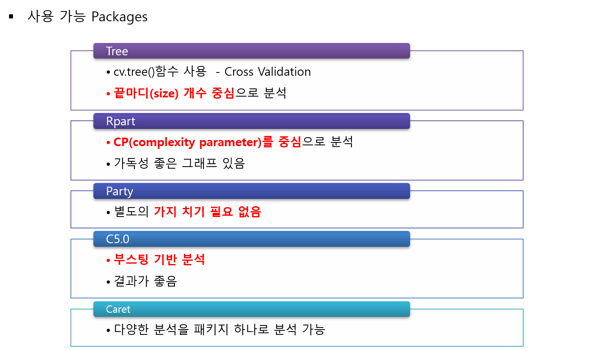
Package
rpart와caret방법으로 의사결정나무를 실습하기 위해서 사용될 예제 데이터는 “Universal Bank_Main”로 유니버셜 은행의 고객들에 대한 데이터(출처 : Data Mining for Business Intelligence, Shmueli et al. 2010)이다. 데이터는 총 2500개이며, 변수의 갯수는 13개이다. 여기서 Target은Person.Loan이다.
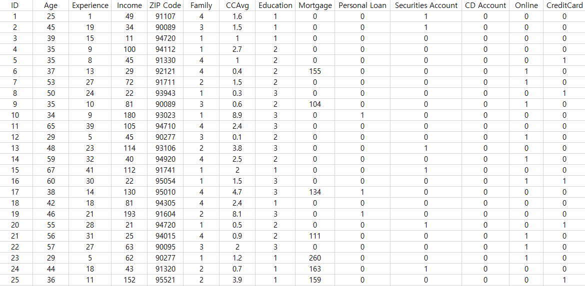
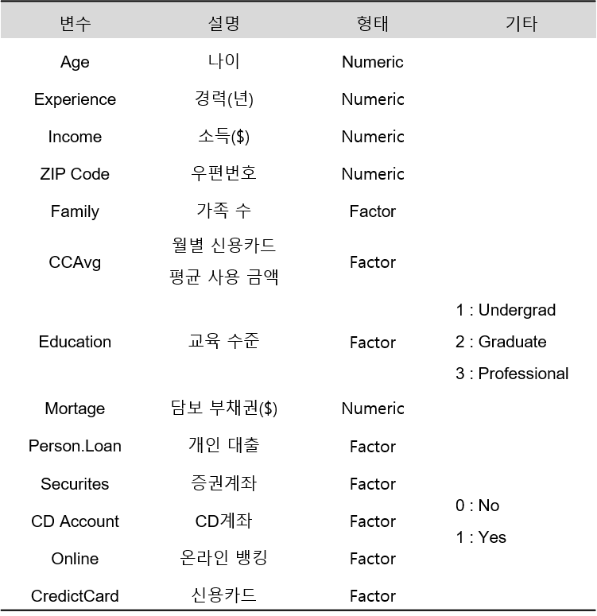
Contents
1. R Package “rpart”
1-1. 데이터 불러오기
pacman::p_load("data.table", "dplyr")
UB <- fread(paste(getwd(),"Universal Bank_Main.csv", sep="/")) %>% # 데이터 불러오기
data.frame() %>% # Data Frame 변환
select(-1) # ID변수 제거
# Convert To Factor
cols <- c("Family", "Education", "Personal.Loan", "Securities.Account",
"CD.Account", "Online", "CreditCard")
UB <- UB %>%
mutate_at(cols, as.factor) # 범주형 변수 변환
glimpse(UB) # 데이터 구조
## Rows: 2,500
## Columns: 13
## $ Age <int> 25, 45, 39, 35, 35, 37, 53, 50, 35, 34, 65, 29, ...
## $ Experience <int> 1, 19, 15, 9, 8, 13, 27, 24, 10, 9, 39, 5, 23, 3...
## $ Income <int> 49, 34, 11, 100, 45, 29, 72, 22, 81, 180, 105, 4...
## $ ZIP.Code <int> 91107, 90089, 94720, 94112, 91330, 92121, 91711,...
## $ Family <fct> 4, 3, 1, 1, 4, 4, 2, 1, 3, 1, 4, 3, 2, 4, 1, 1, ...
## $ CCAvg <dbl> 1.6, 1.5, 1.0, 2.7, 1.0, 0.4, 1.5, 0.3, 0.6, 8.9...
## $ Education <fct> 1, 1, 1, 2, 2, 2, 2, 3, 2, 3, 3, 2, 3, 2, 1, 3, ...
## $ Mortgage <int> 0, 0, 0, 0, 0, 155, 0, 0, 104, 0, 0, 0, 0, 0, 0,...
## $ Personal.Loan <fct> 0, 0, 0, 0, 0, 0, 0, 0, 0, 1, 0, 0, 0, 0, 0, 0, ...
## $ Securities.Account <fct> 1, 1, 0, 0, 0, 0, 0, 0, 0, 0, 0, 0, 1, 0, 1, 0, ...
## $ CD.Account <fct> 0, 0, 0, 0, 0, 0, 0, 0, 0, 0, 0, 0, 0, 0, 0, 0, ...
## $ Online <fct> 0, 0, 0, 0, 0, 1, 1, 0, 1, 0, 0, 1, 0, 1, 0, 1, ...
## $ CreditCard <fct> 0, 0, 0, 0, 1, 0, 0, 1, 0, 0, 0, 0, 0, 0, 0, 1, ...
1-2. 데이터 분할
# Partition (Traning Data : Test Data = 7:3)
pacman::p_load("caret")
y <- UB$Personal.Loan # Target
set.seed(200)
ind <- createDataPartition(y, p=0.7, list=T) # Training Data를 70%로 추출
UB.trd <- UB[ind$Resample1,] # Traning Data
UB.ted <- UB[-ind$Resample1,] # Test Data
detach(package:caret)
1-3. 모형 적합
의사결정나무모형을 형성하기 위해 사용될 첫번째 Package는 "rpart"이다. "rpart"는 수정된 CART를 사용하며, CP (Complexity Parameter)를 중심으로 분석한다. 게다가 "rpart"는 Cross Validation을 이용하여 의사결정나무를 생성하며, defalut값은 10-fold Cross Validation이다. 또한 가독성 좋은 그래프가 있기 때문에 트리를 시각화하기에 좋다.
rpart(formula, data, method, ...)
formula: Target과 예측 변수에 대한 공식으로써 일반적으로Target ~ 예측변수로 적는다.data:formula의 변수들이 있는 데이터 프레임method: Target이 범주형이면"class", Target이 수치형이면"anova"를 해준다.
pacman::p_load("rpart", # For Decision Tree
"rattle", "rpart.plot") # For fancyRpartPlot(가독성 좋은 그래프)
set.seed(200) # Seed 고정 For Cross Validation
rContol <- rpart.control(xval=10) # xval : Number Of Cross Validation
UB.trd.rtree <- rpart(Personal.Loan~., data=UB.trd,
method="class", control = rContol)
summary(UB.trd.rtree)
## Call:
## rpart(formula = Personal.Loan ~ ., data = UB.trd, method = "class",
## control = rContol)
## n= 1751
##
## CP nsplit rel error xerror xstd
## 1 0.32500000 0 1.0000000 1.0000000 0.07060066
## 2 0.15000000 2 0.3500000 0.3777778 0.04491392
## 3 0.01944444 3 0.2000000 0.2111111 0.03387310
## 4 0.01111111 5 0.1611111 0.2222222 0.03473277
## 5 0.01000000 7 0.1388889 0.2222222 0.03473277
##
## Variable importance
## Income Education Family CCAvg CD.Account Mortgage ZIP.Code
## 29 28 20 13 5 3 1
## Age Experience
## 1 1
##
## Node number 1: 1751 observations, complexity param=0.325
## predicted class=0 expected loss=0.1027984 P(node) =1
## class counts: 1571 180
## probabilities: 0.897 0.103
## left son=2 (1366 obs) right son=3 (385 obs)
## Primary splits:
## Income < 106.5 to the left, improve=94.968130, (0 missing)
## CCAvg < 2.95 to the left, improve=69.046700, (0 missing)
## CD.Account splits as LR, improve=41.226300, (0 missing)
## Mortgage < 293.5 to the left, improve=14.467750, (0 missing)
## Education splits as LRR, improve= 7.681315, (0 missing)
## Surrogate splits:
## CCAvg < 3.25 to the left, agree=0.868, adj=0.400, (0 split)
## Mortgage < 339.5 to the left, agree=0.802, adj=0.101, (0 split)
## CD.Account splits as LR, agree=0.786, adj=0.026, (0 split)
##
## Node number 2: 1366 observations, complexity param=0.01111111
## predicted class=0 expected loss=0.01537335 P(node) =0.7801256
## class counts: 1345 21
## probabilities: 0.985 0.015
## left son=4 (1277 obs) right son=5 (89 obs)
## Primary splits:
## CCAvg < 2.95 to the left, improve=9.2644320, (0 missing)
## Income < 98.5 to the left, improve=3.5382100, (0 missing)
## CD.Account splits as LR, improve=1.1082890, (0 missing)
## Mortgage < 220.5 to the left, improve=0.6886484, (0 missing)
## Experience < 38.5 to the left, improve=0.2000360, (0 missing)
##
## Node number 3: 385 observations, complexity param=0.325
## predicted class=0 expected loss=0.412987 P(node) =0.2198744
## class counts: 226 159
## probabilities: 0.587 0.413
## left son=6 (242 obs) right son=7 (143 obs)
## Primary splits:
## Education splits as LRR, improve=111.984200, (0 missing)
## Family splits as LLRR, improve= 73.753990, (0 missing)
## CD.Account splits as LR, improve= 27.998710, (0 missing)
## Income < 156.5 to the left, improve= 11.193100, (0 missing)
## CCAvg < 6.635 to the right, improve= 4.353303, (0 missing)
## Surrogate splits:
## Family splits as LLRR, agree=0.743, adj=0.308, (0 split)
## CD.Account splits as LR, agree=0.683, adj=0.147, (0 split)
## Income < 173.5 to the left, agree=0.642, adj=0.035, (0 split)
## CCAvg < 8.85 to the left, agree=0.634, adj=0.014, (0 split)
## ZIP.Code < 90021.5 to the right, agree=0.631, adj=0.007, (0 split)
##
## Node number 4: 1277 observations
## predicted class=0 expected loss=0 P(node) =0.7292975
## class counts: 1277 0
## probabilities: 1.000 0.000
##
## Node number 5: 89 observations, complexity param=0.01111111
## predicted class=0 expected loss=0.2359551 P(node) =0.0508281
## class counts: 68 21
## probabilities: 0.764 0.236
## left son=10 (73 obs) right son=11 (16 obs)
## Primary splits:
## Income < 98.5 to the left, improve=5.904956, (0 missing)
## CD.Account splits as LR, improve=4.645443, (0 missing)
## CCAvg < 3.15 to the right, improve=3.739411, (0 missing)
## Experience < 31.5 to the left, improve=2.313744, (0 missing)
## Mortgage < 86.5 to the left, improve=2.146298, (0 missing)
## Surrogate splits:
## Age < 62.5 to the left, agree=0.843, adj=0.125, (0 split)
## Experience < 38.5 to the left, agree=0.843, adj=0.125, (0 split)
## ZIP.Code < 90061.5 to the right, agree=0.843, adj=0.125, (0 split)
##
## Node number 6: 242 observations, complexity param=0.15
## predicted class=0 expected loss=0.1198347 P(node) =0.1382067
## class counts: 213 29
## probabilities: 0.880 0.120
## left son=12 (211 obs) right son=13 (31 obs)
## Primary splits:
## Family splits as LLRR, improve=47.3076500, (0 missing)
## CD.Account splits as LR, improve= 8.0685060, (0 missing)
## Mortgage < 279.5 to the left, improve= 1.5428930, (0 missing)
## CCAvg < 6.635 to the right, improve= 1.2562530, (0 missing)
## ZIP.Code < 95057 to the left, improve= 0.9027978, (0 missing)
## Surrogate splits:
## CD.Account splits as LR, agree=0.880, adj=0.065, (0 split)
## Mortgage < 566 to the left, agree=0.876, adj=0.032, (0 split)
##
## Node number 7: 143 observations, complexity param=0.01944444
## predicted class=1 expected loss=0.09090909 P(node) =0.08166762
## class counts: 13 130
## probabilities: 0.091 0.909
## left son=14 (25 obs) right son=15 (118 obs)
## Primary splits:
## Income < 116.5 to the left, improve=11.1563600, (0 missing)
## CCAvg < 2.4 to the left, improve= 2.6908830, (0 missing)
## Experience < 2.5 to the left, improve= 2.4008740, (0 missing)
## Age < 29.5 to the left, improve= 2.2161600, (0 missing)
## CD.Account splits as LR, improve= 0.9500891, (0 missing)
##
## Node number 10: 73 observations
## predicted class=0 expected loss=0.1506849 P(node) =0.04169046
## class counts: 62 11
## probabilities: 0.849 0.151
##
## Node number 11: 16 observations
## predicted class=1 expected loss=0.375 P(node) =0.009137636
## class counts: 6 10
## probabilities: 0.375 0.625
##
## Node number 12: 211 observations
## predicted class=0 expected loss=0 P(node) =0.1205026
## class counts: 211 0
## probabilities: 1.000 0.000
##
## Node number 13: 31 observations
## predicted class=1 expected loss=0.06451613 P(node) =0.01770417
## class counts: 2 29
## probabilities: 0.065 0.935
##
## Node number 14: 25 observations, complexity param=0.01944444
## predicted class=0 expected loss=0.48 P(node) =0.01427756
## class counts: 13 12
## probabilities: 0.520 0.480
## left son=28 (13 obs) right son=29 (12 obs)
## Primary splits:
## CCAvg < 2.4 to the left, improve=3.3646150, (0 missing)
## ZIP.Code < 93060 to the right, improve=2.4938890, (0 missing)
## Age < 29.5 to the left, improve=1.2447060, (0 missing)
## Experience < 7 to the left, improve=1.0800000, (0 missing)
## Education splits as -RL, improve=0.9605195, (0 missing)
## Surrogate splits:
## ZIP.Code < 94014.5 to the right, agree=0.88, adj=0.750, (0 split)
## Age < 38.5 to the left, agree=0.72, adj=0.417, (0 split)
## Experience < 18.5 to the left, agree=0.72, adj=0.417, (0 split)
## Education splits as -RL, agree=0.72, adj=0.417, (0 split)
## Income < 113.5 to the left, agree=0.68, adj=0.333, (0 split)
##
## Node number 15: 118 observations
## predicted class=1 expected loss=0 P(node) =0.06739006
## class counts: 0 118
## probabilities: 0.000 1.000
##
## Node number 28: 13 observations
## predicted class=0 expected loss=0.2307692 P(node) =0.007424329
## class counts: 10 3
## probabilities: 0.769 0.231
##
## Node number 29: 12 observations
## predicted class=1 expected loss=0.25 P(node) =0.006853227
## class counts: 3 9
## probabilities: 0.250 0.750
먼저 첫번째로 나오는 Table에 대한 용어 설명이다.
CP: Complexity Parameter로 Training Data에 대한 오분류율+나무 크기에 대한 벌점 요인으로 계산된다. 또한 CP는 나무의 복잡도를 나타냄으로써 나무의 크기를 통제하고 최적의 크기를 선택할 수 있게 해준다.nsplit: 분리의 횟수rel error: $1-R^2$ root mean square error로 모형을 추정하는 데 사용된 데이터의 예측에 대한 오차xerror: Cross Validation Errorxstd:xerror의 표준오차
Variable importance는 변수중요도로써, Income $>$ Education $>$ Family 임을 알 수 있다. Node number 1 은 첫번째 노드에 대한 설명으로써 총 1751개의 관측값이 있으며, predicted class=0, CP=0.325, expected loss (불순도)= 0.1027984이다. 전체 관측값 1751개 중 클래스 “0”은 1571, 클래스 “1”은 180개 이며, 비율은 각각 0.897, 0.103이다. left son = 2 (1366 obs)는 왼쪽 자식 노드의 번호는 2 이고 1366개의 관측값이 있다는 뜻이다.
1-4. Tree 그림
1-4-1. “fancyRpartPlot”
fancyRpartPlot(UB.trd.rtree) # 가독성 좋은 그래프
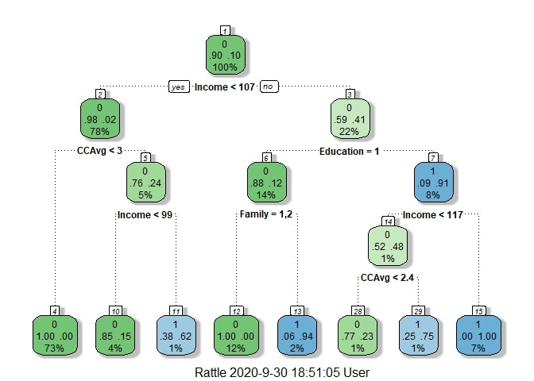
1-4-2. “visTree”
pacman::p_load("visNetwork","sparkline") # 네트워크 기반 그래프
visTree(UB.trd.rtree)
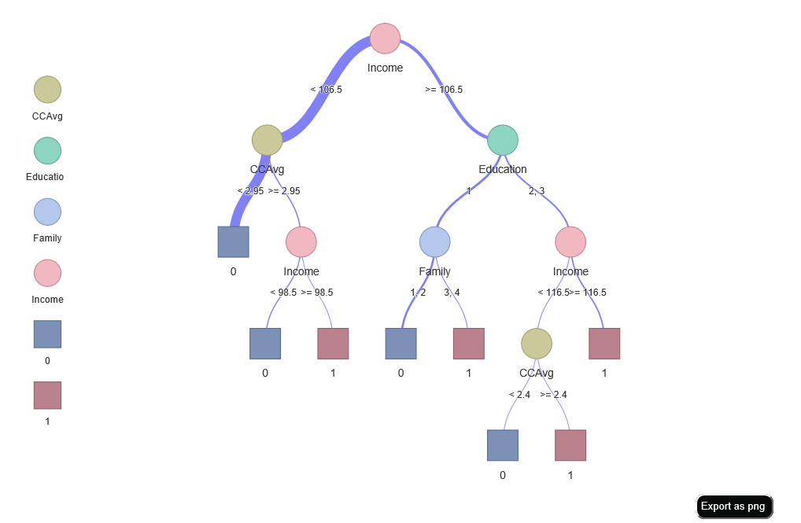
1-5. 가지치기(과적합 문제 해결)
과적합 문제를 해결하기 위해 가지치기를 수행한다. rpart에서 최적의 CP 값을 찾는 것이 중요하며, 이것은 xerror가 최소가 되는 CP를 찾으면 된다.
table <- UB.trd.rtree$cptable # CP Table
low.error <- which.min(table[ ,"xerror"]) # Table의 ”xerror”열에서 가장 낮은 값 위치 추출
cp.best <- table[low.error, "CP"] # ”CP”에서 low.error에 해당하는 CP 선택
UB.trd.prune.rtree <- prune(UB.trd.rtree, cp=cp.best) # prune(트리모형, 최적의 “CP”)
UB.trd.prune.rtree$cptable # 최종 모형에 대한 CP Table
## CP nsplit rel error xerror xstd
## 1 0.32500000 0 1.00 1.0000000 0.07060066
## 2 0.15000000 2 0.35 0.3777778 0.04491392
## 3 0.01944444 3 0.20 0.2111111 0.03387310
가지치기를 함으로써 최종 모형이 완성되고 최종 모형에 대한 Tree 그림은 다음과 같다.
fancyRpartPlot(UB.trd.prune.rtree) # 가독성 좋은 그래프
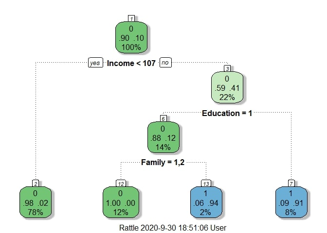
visTree(UB.trd.prune.rtree) # 네트워크 기반 그래프
1-6. 모형 평가
# 적합된 모형에 대하여 Test Data 예측
test.rtree <- predict(UB.trd.prune.rtree, newdata=UB.ted, type="class") # predict(트리모형, Test Data)
1-6-1. ConfusionMatrix
pacman::p_load("caret")
CM <- confusionMatrix(test.rtree, UB.ted$Personal.Loan, positive="1") # confusionMatrix(예측 클래스, 실제 클래스, positive="관심클래스")
CM
## Confusion Matrix and Statistics
##
## Reference
## Prediction 0 1
## 0 656 12
## 1 17 64
##
## Accuracy : 0.9613
## 95% CI : (0.9449, 0.9739)
## No Information Rate : 0.8985
## P-Value [Acc > NIR] : 1.228e-10
##
## Kappa : 0.7937
##
## Mcnemar's Test P-Value : 0.4576
##
## Sensitivity : 0.84211
## Specificity : 0.97474
## Pos Pred Value : 0.79012
## Neg Pred Value : 0.98204
## Prevalence : 0.10147
## Detection Rate : 0.08545
## Detection Prevalence : 0.10814
## Balanced Accuracy : 0.90842
##
## 'Positive' Class : 1
##
detach(package:caret)
1-6-2. ROC 곡선
1) Package “pROC”
pacman::p_load("pROC")
test.rtree.prob <- predict(UB.trd.prune.rtree, newdata=UB.ted) # Training Data로 적합시킨 모형에 대한 Test Data의 각 클래스에 대한 예측 확률
test.rtree.prob <- test.rtree.prob[,2] # "1"에 대한 예측 확률
ac <- as.numeric(as.character(UB.ted$Personal.Loan)) # 범주형을 숫자형으로 변환할 때 문자형으로 변환한 뒤 숫자형으로 변환해야함
rpp <- as.numeric(test.rtree.prob) # "1"에 대한 예측 확률
rtree.roc <- roc(ac, rpp, plot=T, col="red") # roc(실제 클래스, 예측 확률)
## Setting levels: control = 0, case = 1
## Setting direction: controls < cases
auc <- round(auc(rtree.roc),3)
legend("bottomright", legend=auc, bty="n")
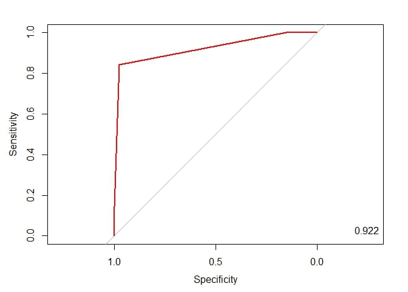
detach(package:pROC)
2) Package “Epi”
pacman::p_load("Epi")
# install_version("etm", version = "1.1", repos = "http://cran.us.r-project.org")
ROC(rpp, ac, plot="ROC") # ROC(예측 확률, 실제 클래스) / 최적의 Cutoff Value 예측 가능
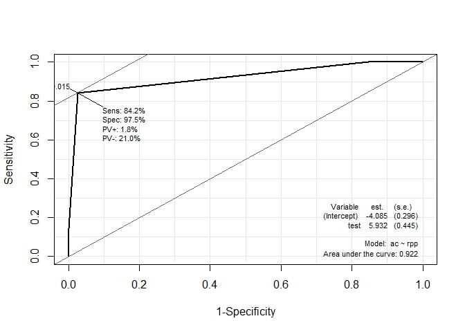
detach(package:Epi)
3) Package “ROCR”
pacman::p_load("ROCR")
rtree.pred <- prediction(test.rtree.prob, UB.ted$Personal.Loan) # prediction(예측 확률, 실제 클레스)
rtree.perf <- performance(rtree.pred, "tpr", "fpr") # performance(, "민감도", "1-특이도")
plot(rtree.perf, col="blue") # ROC Curve
perf.auc <- performance(rtree.pred, "auc") # AUC
auc <- attributes(perf.auc)$y.values
legend("bottomright", legend=auc, bty="n")
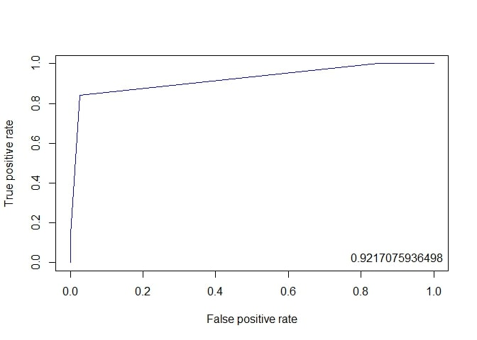
1-6-3. 향상 차트
1) Package “ROCR”
rtree.perf <- performance(rtree.pred, "lift","rpp") # Lift Chart
plot(rtree.perf, main="lift curve", colorize=T, lwd=2)
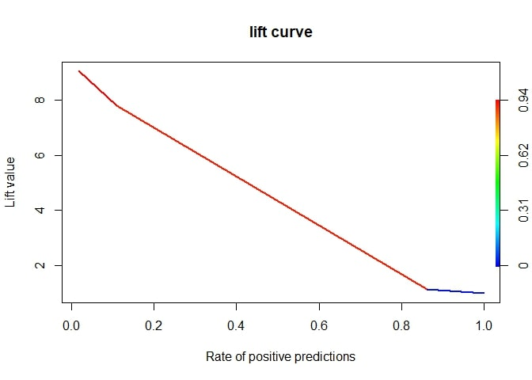
detach(package:ROCR)
2) Package “lift”
pacman::p_load("lift")
plotLift(test.rtree.prob, UB.ted$Personal.Loan, cumulative = T, n.buckets = 24) # plotLift(예측 확률, 실제 클래스)
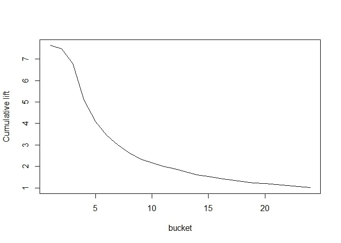
TopDecileLift(test.rtree.prob, UB.ted$Personal.Loan) # Top 10% 향상도 출력
## [1] 7.753
detach(package:lift)
2. R Package “caret”
2-1. 데이터 불러오기
pacman::p_load("data.table", "dplyr")
UB <- fread(paste(getwd(),"Universal Bank_Main.csv", sep="/")) %>% # 데이터 불러오기
data.frame() %>% # Data Frame 변환
mutate(Personal.Loan = ifelse(Personal.Loan==1, "yes","no")) %>% # Character For Classification
select(-1) # ID변수 제거
# Convert To Factor
cols <- c("Family", "Education", "Personal.Loan", "Securities.Account",
"CD.Account", "Online", "CreditCard")
UB <- UB %>%
mutate_at(cols, as.factor) # 범주형 변수 변환
glimpse(UB) # 데이터 구조
## Rows: 2,500
## Columns: 13
## $ Age <int> 25, 45, 39, 35, 35, 37, 53, 50, 35, 34, 65, 29, ...
## $ Experience <int> 1, 19, 15, 9, 8, 13, 27, 24, 10, 9, 39, 5, 23, 3...
## $ Income <int> 49, 34, 11, 100, 45, 29, 72, 22, 81, 180, 105, 4...
## $ ZIP.Code <int> 91107, 90089, 94720, 94112, 91330, 92121, 91711,...
## $ Family <fct> 4, 3, 1, 1, 4, 4, 2, 1, 3, 1, 4, 3, 2, 4, 1, 1, ...
## $ CCAvg <dbl> 1.6, 1.5, 1.0, 2.7, 1.0, 0.4, 1.5, 0.3, 0.6, 8.9...
## $ Education <fct> 1, 1, 1, 2, 2, 2, 2, 3, 2, 3, 3, 2, 3, 2, 1, 3, ...
## $ Mortgage <int> 0, 0, 0, 0, 0, 155, 0, 0, 104, 0, 0, 0, 0, 0, 0,...
## $ Personal.Loan <fct> no, no, no, no, no, no, no, no, no, yes, no, no,...
## $ Securities.Account <fct> 1, 1, 0, 0, 0, 0, 0, 0, 0, 0, 0, 0, 1, 0, 1, 0, ...
## $ CD.Account <fct> 0, 0, 0, 0, 0, 0, 0, 0, 0, 0, 0, 0, 0, 0, 0, 0, ...
## $ Online <fct> 0, 0, 0, 0, 0, 1, 1, 0, 1, 0, 0, 1, 0, 1, 0, 1, ...
## $ CreditCard <fct> 0, 0, 0, 0, 1, 0, 0, 1, 0, 0, 0, 0, 0, 0, 0, 1, ...
2-2. 데이터 분할
# Partition (Traning Data : Test Data = 7:3)
pacman::p_load("caret")
y <- UB$Personal.Loan # Target
set.seed(200)
ind <- createDataPartition(y, p=0.7, list=T) # Training Data를 70%로 추출
UB.trd <- UB[ind$Resample1,] # Traning Data
UB.ted <- UB[-ind$Resample1,] # Test Data
2-3. 모형 적합
Turn Parameter인 CP의 그리드를 조정하기 위해서 그리드를 조정해주지 않았을 때 결과를 참고하였다. 아래는 그리드를 조정해주지 않았을 때 기본적인 결과이다. (caret에서 자동적으로 xval = 0이며, 최적의 cp를 이용하여 최종 모형을 적합하기 때문에 가지치기를 할 필요가 없다.)
fitControl <- trainControl(method="cv", number=5) # 5-Fold Cross Validation
set.seed(100) # Seed 고정 For Cross Validation
rtree.caret <- train(Personal.Loan~., data=UB.trd, method="rpart", trControl = fitControl)
rtree.caret
## CART
##
## 1751 samples
## 12 predictor
## 2 classes: 'no', 'yes'
##
## No pre-processing
## Resampling: Cross-Validated (5 fold)
## Summary of sample sizes: 1401, 1401, 1400, 1401, 1401
## Resampling results across tuning parameters:
##
## cp Accuracy Kappa
## 0.0500000 0.9697387 0.8284624
## 0.1000000 0.9611673 0.7713973
## 0.1666667 0.9485975 0.6144540
##
## Accuracy was used to select the optimal model using the largest value.
## The final value used for the model was cp = 0.05.
모수가 하나이기 때문에 3개의 CP 값을 랜덤적으로 보여주며, 0.05일 때 정확도가 가장 높은 것을 알 수 있다. 아래는 CP가 0.05일 때 가장 좋으므로, CP의 탐색 범위를 조절한 코드이다.
customGrid <- expand.grid(cp = seq(0.01,0.07, by=0.001)) # CP의 탐색 범위
set.seed(100) # Seed 고정 For Cross Validation
rtree.grid.caret <- train(Personal.Loan~., data=UB.trd, tuneGrid = customGrid,
method="rpart", trControl = fitControl)
rtree.grid.caret
## CART
##
## 1751 samples
## 12 predictor
## 2 classes: 'no', 'yes'
##
## No pre-processing
## Resampling: Cross-Validated (5 fold)
## Summary of sample sizes: 1401, 1401, 1400, 1401, 1401
## Resampling results across tuning parameters:
##
## cp Accuracy Kappa
## 0.010 0.9760179 0.8639124
## 0.011 0.9760179 0.8639124
## 0.012 0.9760179 0.8639124
## 0.013 0.9760179 0.8639124
## 0.014 0.9760179 0.8623885
## 0.015 0.9760179 0.8623885
## 0.016 0.9760179 0.8623885
## 0.017 0.9760179 0.8623885
## 0.018 0.9765893 0.8653539
## 0.019 0.9765893 0.8653539
## 0.020 0.9765893 0.8653539
## 0.021 0.9760179 0.8629073
## 0.022 0.9760179 0.8629073
## 0.023 0.9760179 0.8629073
## 0.024 0.9760179 0.8629073
## 0.025 0.9760179 0.8629073
## 0.026 0.9760179 0.8629073
## 0.027 0.9760179 0.8629073
## 0.028 0.9754481 0.8614672
## 0.029 0.9754481 0.8614672
## 0.030 0.9754481 0.8614672
## 0.031 0.9754481 0.8614672
## 0.032 0.9754481 0.8614672
## 0.033 0.9754481 0.8614672
## 0.034 0.9754481 0.8614672
## 0.035 0.9737387 0.8493612
## 0.036 0.9737387 0.8493612
## 0.037 0.9737387 0.8493612
## 0.038 0.9737387 0.8493612
## 0.039 0.9737387 0.8493612
## 0.040 0.9737387 0.8493612
## 0.041 0.9737387 0.8493612
## 0.042 0.9725958 0.8410719
## 0.043 0.9725958 0.8410719
## 0.044 0.9725958 0.8410719
## 0.045 0.9725958 0.8410719
## 0.046 0.9725958 0.8410719
## 0.047 0.9725958 0.8410719
## 0.048 0.9725958 0.8410719
## 0.049 0.9697387 0.8284624
## 0.050 0.9697387 0.8284624
## 0.051 0.9697387 0.8284624
## 0.052 0.9697387 0.8284624
## 0.053 0.9697387 0.8284624
## 0.054 0.9697387 0.8284624
## 0.055 0.9697387 0.8284624
## 0.056 0.9691673 0.8246504
## 0.057 0.9691673 0.8246504
## 0.058 0.9691673 0.8246504
## 0.059 0.9691673 0.8246504
## 0.060 0.9691673 0.8246504
## 0.061 0.9691673 0.8246504
## 0.062 0.9691673 0.8246504
## 0.063 0.9691673 0.8246504
## 0.064 0.9691673 0.8246504
## 0.065 0.9691673 0.8246504
## 0.066 0.9691673 0.8246504
## 0.067 0.9691673 0.8246504
## 0.068 0.9691673 0.8246504
## 0.069 0.9691673 0.8246504
## 0.070 0.9691673 0.8246504
##
## Accuracy was used to select the optimal model using the largest value.
## The final value used for the model was cp = 0.02.
plot(rtree.grid.caret)
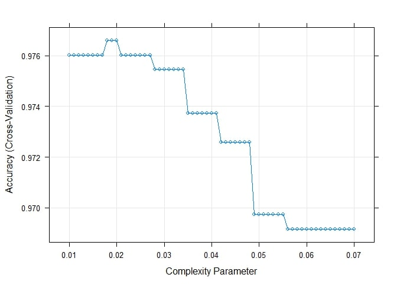
CP 값이 0.02일 때 정확도가 가장 높다는 것을 알 수 있으며, 최종 모형은 CP = 0.02일 때 적합된 모형이다.
2-4. Tree 그림
2-4-1. “fancyRpartPlot”
pacman::p_load("rattle")
fancyRpartPlot(rtree.grid.caret$finalModel) # 가독성 좋은 그래프
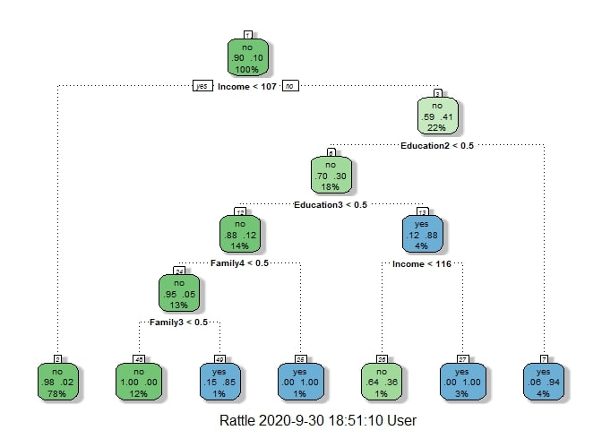
2-4-2. “visTree”
pacman::p_load("visNetwork","sparkline")
visTree(rtree.grid.caret$finalModel) # 네트워크 기반 그래프
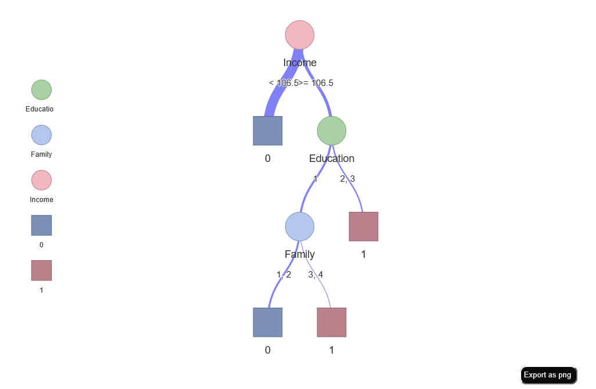
2-5. 모형 평가
# 적합된 모형으로 Test Data의 클래스 예측
rtree.grid.caret.pred <- predict(rtree.grid.caret, newdata=UB.ted) # predict(트리모형, Test Data)
2-5-1. ConfusionMatrix
confusionMatrix(rtree.grid.caret.pred, UB.ted$Personal.Loan, positive = "yes") # ConfusionMatrix(예측 클래스, 실제 클래스, positive="관심 클래스")
## Confusion Matrix and Statistics
##
## Reference
## Prediction no yes
## no 665 15
## yes 8 61
##
## Accuracy : 0.9693
## 95% CI : (0.9543, 0.9804)
## No Information Rate : 0.8985
## P-Value [Acc > NIR] : 1.268e-13
##
## Kappa : 0.8244
##
## Mcnemar's Test P-Value : 0.2109
##
## Sensitivity : 0.80263
## Specificity : 0.98811
## Pos Pred Value : 0.88406
## Neg Pred Value : 0.97794
## Prevalence : 0.10147
## Detection Rate : 0.08144
## Detection Prevalence : 0.09212
## Balanced Accuracy : 0.89537
##
## 'Positive' Class : yes
##
2-5-2. ROC 곡선
1) Package “pROC”
pacman::p_load("pROC")
test.rtree.prob <- predict(rtree.grid.caret, newdata = UB.ted, type="prob") # Training Data로 적합시킨 모형에 대한 Test Data의 각 클래스에 대한 예측 확률
test.rtree.prob <- test.rtree.prob[,2] # "yes"에 대한 예측 확률
ac <- UB.ted$Personal.Loan
pp <- as.numeric(test.rtree.prob) # "yes"에 대한 예측 확률
tree.roc <- roc(ac, pp, plot = T, col = "red") # roc(실제 클래스, 예측 확률)
## Setting levels: control = no, case = yes
## Setting direction: controls < cases
auc <- round(auc(tree.roc),3)
legend("bottomright",legend=auc, bty="n")
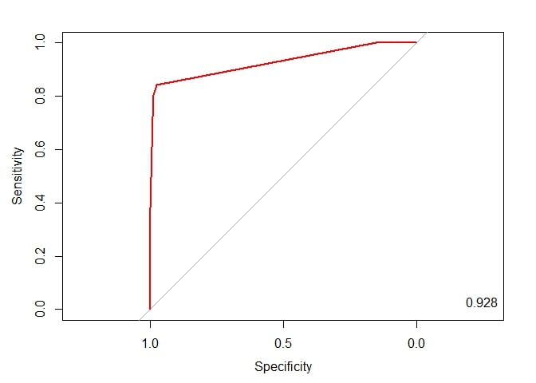
detach(package:pROC)
2) Package “Epi”
pacman::p_load("devtools", "Epi")
# install_version("etm", version = "1.1", repos = "http://cran.us.r-project.org")
ROC(pp, ac, plot="ROC") # ROC(예측 확률, 실제 클래스) / 최적의 cutoff value 예측 가능
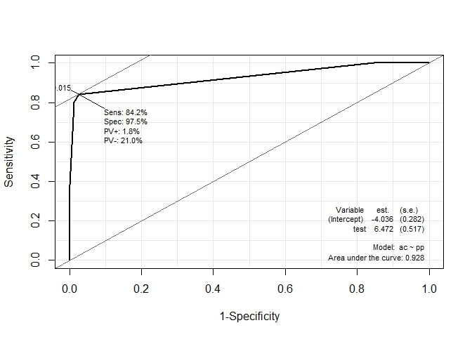
detach(package:Epi)
3) Package “ROCR”
pacman::p_load("ROCR")
rtree.pred <- prediction(test.rtree.prob, UB.ted$Personal.Loan) # prediction(예측 확률, 실제 클레스)
rtree.perf <- performance(rtree.pred, "tpr", "fpr") # performance(, "민감도", "1-특이도")
plot(rtree.perf, col="red") # ROC Curve
perf.auc <- performance(rtree.pred, "auc") # AUC
auc <- attributes(perf.auc)$y.values
legend("bottomright", legend=auc, bty="n")
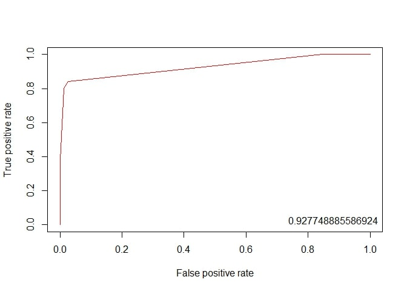
2-5-3. 향상 차트
1) Package “ROCR”
rtree.perf <- performance(rtree.pred, "lift", "rpp") # Lift Chart
plot(rtree.perf, main="lift curve", colorize=T, lwd=2)
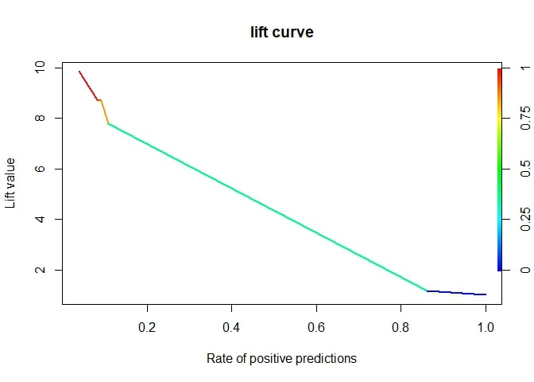
detach(package:ROCR)
2) Package “lift”
pacman::p_load("lift")
ac.numeric <- ifelse(UB.ted$Personal.Loan=="yes",1,0) # 실제 클래스를 수치형으로 변환
plotLift(test.rtree.prob, ac.numeric, cumulative = T, n.buckets = 24) # plotLift(예측 확률, 실제 클래스)
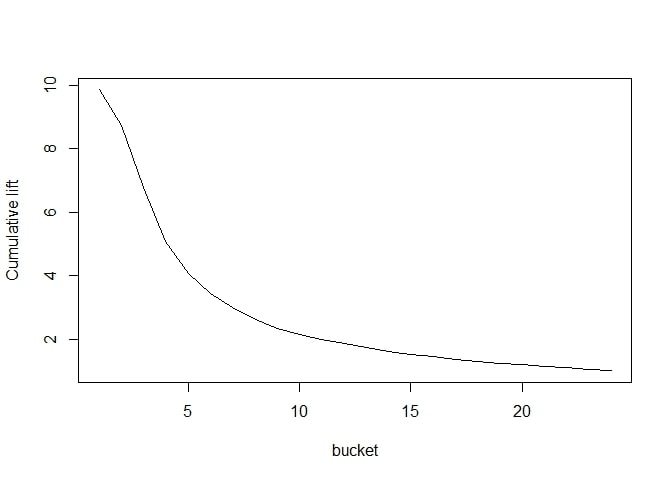
TopDecileLift(test.rtree.prob, ac.numeric) # Top 10% 향상도 출력
## [1] 8.147
detach(package:lift)
3. 모형 비교
pacman::p_load("ROCR")
# Package "rpart"
test.rtree.prob <- predict(UB.trd.prune.rtree, newdata=UB.ted) # Training Data로 적합시킨 모형에 대한 Test Data의 각 클래스에 대한 예측 확률
test.rtree.prob <- test.rtree.prob[,2] # "1"에 대한 예측 확률
rtree.pred <- prediction(test.rtree.prob, UB.ted$Personal.Loan) # prediction(예측 확률, 실제 클레스)
rtree.perf <- performance(rtree.pred, "tpr", "fpr") # performance(, "민감도", "1-특이도")
plot(rtree.perf, col="blue") # ROC Curve
par(new=TRUE)
# Pacakge "caret"
test.caret.rtree.prob <- predict(rtree.grid.caret, newdata = UB.ted, type="prob") # Training Data로 적합시킨 모형에 대한 Test Data의 각 클래스에 대한 예측 확률
test.caret.rtree.prob <- test.caret.rtree.prob[,2] # "yes"에 대한 예측 확률
caret.rtree.pred <- prediction(test.caret.rtree.prob, UB.ted$Personal.Loan) # prediction(예측 확률, 실제 클레스)
ctree.perf <- performance(caret.rtree.pred, "tpr", "fpr") # performance(, "민감도", "1-특이도")
plot(ctree.perf, col="red") # ROC Curve
legend("bottomright", legend=c("rpart","caret"), col=c("blue", "red"), lty=c(1,1))
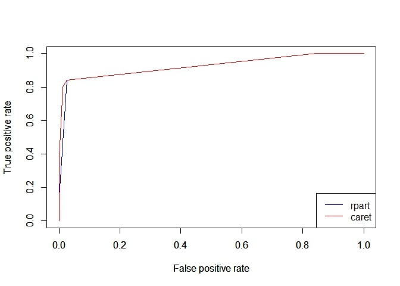